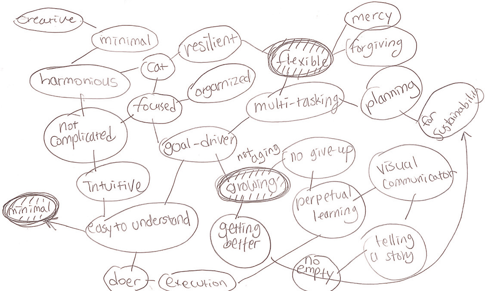
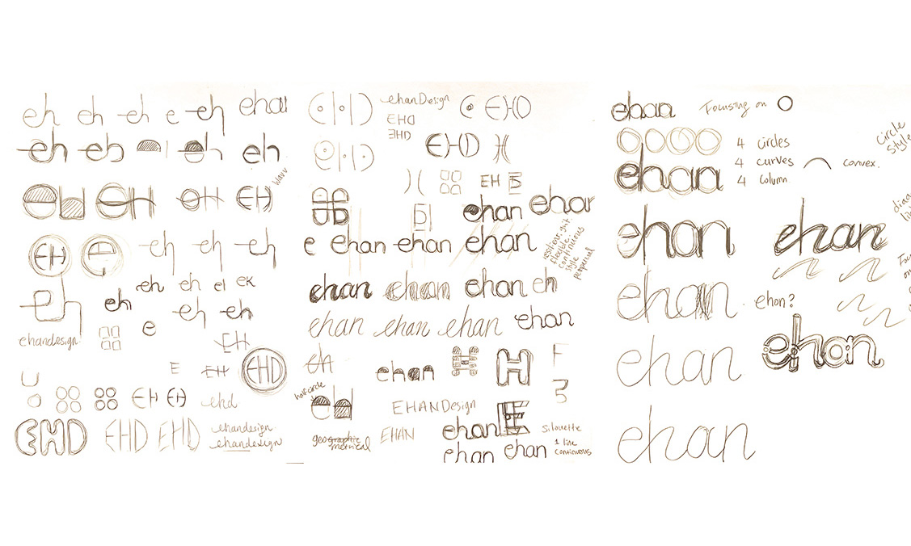
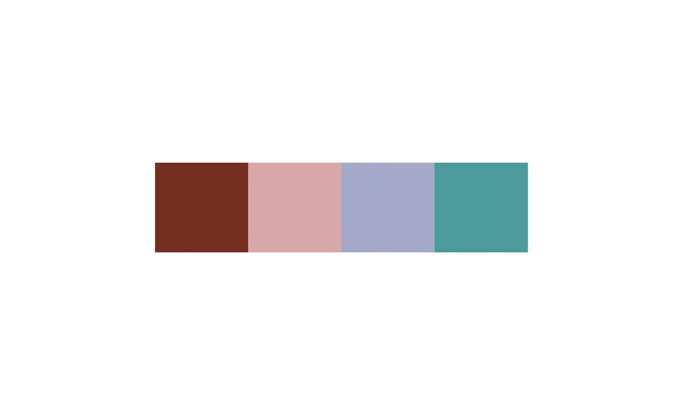
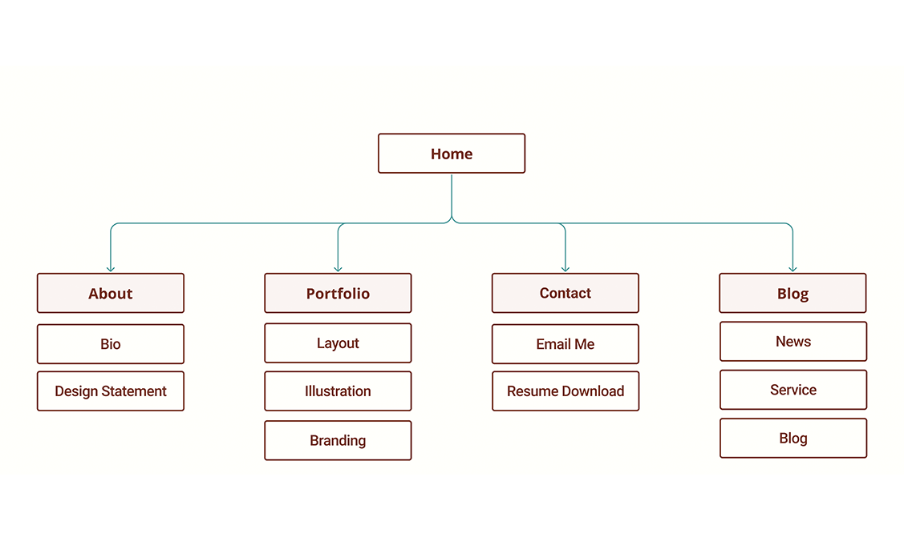
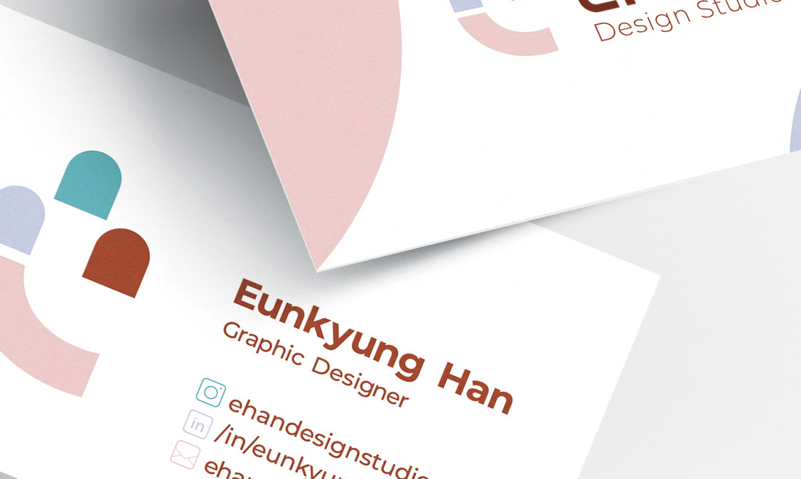
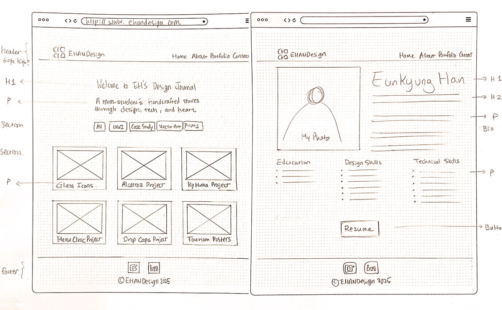

Six Steps to Build the EHAN Website
Role: Brand Designer / Developer
Purpose: Showcase front-end development expertise alongside well graphic design capabilities
Date: August - December, 2025
Supervisor: Prof. Diana Bennett, College of San Mateo
1. Brainstorming
The first step was defining my brand identity. Mind mapping helped narrow down a wide range of ideas into clear directions.
2. Identity Visualization
The logo design process began with hand hand sketches, generating multiple visual concepts based on the identity themes I explored.
3. Colorscheme
I selected a color family to represent my identity. The reddish brown serves as the primary color, supported by three mid-tone accents.
4. Information Architecture
To ensure clarity and simplicity, I planned the content hierarchy for my first brand website before moving into interface design.
5. Reference Images
My business card served as a key reference point, huiding the visual direction and reinforcing consistency across web design concepts.
6. Mockup Sketch
Similar to the logo design process, the website layout began with hand sketches to establish structure and flow.